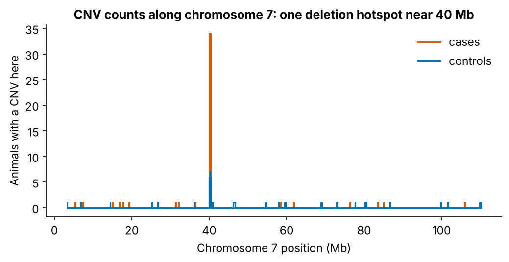

15 Copy number variants
A copy number variant (CNV) is a stretch of DNA that some animals have lost (a deletion) or carry extra copies of (a duplication). In our data, BRD cases carried 46% more CNVs than controls, and one deletion on chromosome 7 was carried by 34 cases but only 6 controls.
PLINK does not call CNVs. A caller such as PennCNV or QuantiSNP reads the raw SNP-chip intensities (Log R Ratio and B Allele Frequency) and writes a list of segments. PLINK 1.07 then filters, summarizes and tests those segments. PLINK 1.9 and 2.0 have no CNV tools, so this chapter uses plink107 --noweb --cow.
15.1 What a CNV looks like in the data
Normally an animal has two copies of every autosomal segment, one from each parent. A deletion leaves 1 (or 0) copies; a duplication gives 3 or more.
| Copy number | Name | Code in the .cnv file |
|---|---|---|
| 0 | Homozygous deletion | 0 |
| 1 | Heterozygous deletion | 1 |
| 2 | Normal | (not listed) |
| 3 or 4 | Duplication | 3, 4 |
15.2 Step 1: the CNV file and its map
A .cnv file has one line per segment:
FID IID CHR BP1 BP2 TYPE SCORE SITES
ANG ANG_001 13 67427184 67528256 3 25.19 12
ANG ANG_001 12 77659358 77822565 3 6.98 20| Column | Meaning |
|---|---|
| BP1, BP2 | Start and end of the segment |
| TYPE | Copy number |
| SCORE | Confidence score from the caller |
| SITES | Number of SNP probes inside the segment |
Our file has 1,260 segments for 361 animals. PLINK first needs a map of all segment boundaries:
plink107 --noweb --cow --cnv-list cattle.cnv --fam cattle.fam --cnv-make-map --out cnv
# Wrote 3780 unique positions to file
plink107 --noweb --cow --cnv-list cattle.cnv --fam cattle.fam --map cnv.cnv.map --out cnv_sum1250 mapped to a person, of which 1250 passed filters
CopyN Case/Control
1 383 / 382
3 228 / 257Ten segments belonged to the two animals with unknown sex, whose phenotypes PLINK 1.07 treats as missing. cnv_sum.cnv.indiv lists each animal’s number of segments (NSEG), total length (KB) and average length (KBAVG); cnv_sum.cnv.summary lists, for each map position, how many cases and controls have a CNV there.
15.3 Step 2: filter the segments
Many short CNVs with few probes and low scores are calling errors. Filtering is where CNV studies succeed or fail, and every filter changes the counts:
| Filter | Keeps | Segments (of 1,250) | Deletions case/control | Duplications case/control |
|---|---|---|---|---|
| none | everything | 1,250 | 383 / 382 | 228 / 257 |
--cnv-del |
deletions only | 765 | 383 / 382 | |
--cnv-dup |
duplications only | 485 | 228 / 257 | |
--cnv-kb 100 |
at least 100 kb | 517 | 185 / 145 | 93 / 94 |
--cnv-max-kb 50 |
at most 50 kb | 360 | 109 / 102 | 72 / 77 |
--cnv-score 20 |
score at least 20 | 691 | 216 / 208 | 119 / 148 |
--cnv-sites 10 |
at least 10 probes | 645 | 212 / 191 | 117 / 125 |
--cnv-freq-exclude-below 10 |
only common CNV regions | 20 / 4 | ||
--cnv-intersect genes.txt |
segments overlapping listed regions | 38 / 9 | 5 / 0 | |
--cnv-exclude genes.txt |
segments not overlapping them | 345 / 373 | 223 / 257 |
A common recipe is --cnv-kb 100 --cnv-sites 10 --cnv-score 10, plus removing animals with far too many CNVs (they usually have noisy intensities; check .cnv.indiv). --cnv-write saves the filtered segments as a new file.
15.4 Step 3: do cases carry more CNVs overall? (burden tests)
--cnv-indiv-perm compares the groups on several summary measures and gets p-values by shuffling the case/control labels among animals.
plink107 --noweb --cow --cnv-list cattle.cnv --fam cattle.fam --map cnv.cnv.map \
--cnv-indiv-perm --mperm 10000 --seed 3 --out burden| Measure | Meaning | Cases | Controls | Empirical p |
|---|---|---|---|---|
| RATE | CNVs per animal | 4.30 | 2.95 | 0.0001 |
| PROP | Share of animals with at least one CNV | 0.97 | 0.96 | 0.44 |
| TOTKB | Total CNV length per animal (kb) | 557.6 | 334.1 | 0.0001 |
| AVGKB | Average length of one CNV (kb) | 125.7 | 110.6 | 0.037 |
Cases carry more and longer CNVs. PROP does not differ because almost every animal has at least one CNV. Split by type, the deletion rate was 2.70 against 1.76 (p = 0.0001) and the duplication rate 1.61 against 1.18 (p = 0.0007). With --cnv-count genes.txt, PLINK adds gene-based measures: 28% of cases but 4% of controls had a CNV in a listed region (GPROP, p = 0.001).
15.5 Step 4: which position? (CNV association by location)
Without --cnv-indiv-perm, --mperm tests every map position:
plink107 --noweb --cow --cnv-list cattle.cnv --fam cattle.fam --map cnv.cnv.map --mperm 10000 --seed 3 --out loci CHR SNP EMP1 EMP2
7 p7-39998413 9.999e-05 9.999e-05
7 p7-40002671 9.999e-05 9.999e-05
Positions are named p<chr>-<bp>. At these positions 34 cases and 6 controls carry a CNV. EMP1 is the point-wise empirical p-value; EMP2 is corrected for all 3,780 positions. All 100 positions with EMP2 < 0.05 lay on chromosome 7 between 39.99 and 40.41 Mb: one deletion region, exactly where the simulation put it. Options: --cnv-test-1sided (only test for more CNVs in cases), --cnv-test-window 100 (count CNVs within 100 kb) and --cnv-test-region (test whole regions).
15.6 Step 5: common CNVs together with SNPs
A common CNV (a copy number polymorphism, CNP) can sit on top of a SNP. An animal can then carry, say, one A allele on one chromosome and a deletion on the other, which normal genotype calling reports as “AA”. PLINK 1.07 stores such data as generic variants in a .gvar file with copy numbers for each allele:
ANG ANG_001 ccnv1 A 1 G 0 # one A copy, the other chromosome deleted
ANG ANG_002 ccnv1 A 1 G 1 # normal heterozygoteWe simulated a deletion that raises BRD risk sitting on a SNP that does not:
plink107 --noweb --cow --gfile ccnv --out g1| Test | Question | Result |
|---|---|---|
| P(SNP) | Does the allele (A or G) matter, ignoring copy number? | 0.053 |
| P(CNP) | Does total copy number matter? | 1.1 × 10⁻⁷ |
| P(CNP|SNP) | Does copy number matter after allowing for the allele? | 3.2 × 10⁻⁷ |
| P(SNP|CNP) | Does the allele matter after allowing for copy number? | 0.26 |
The deletion carries the risk and the SNP allele does not. In a SNP-only study you would only see the weak SNP signal (p = 0.053), which is just a shadow of the deletion.
PLINK 1.9 and 2.0 have no CNV commands. For livestock CNV work today: call CNVs with PennCNV (chips) or a sequencing caller, merge them into CNV regions with tools such as CNVRanger (R/Bioconductor), and test common regions by coding each animal’s copy number as a dosage or covariate in plink2 --glm.